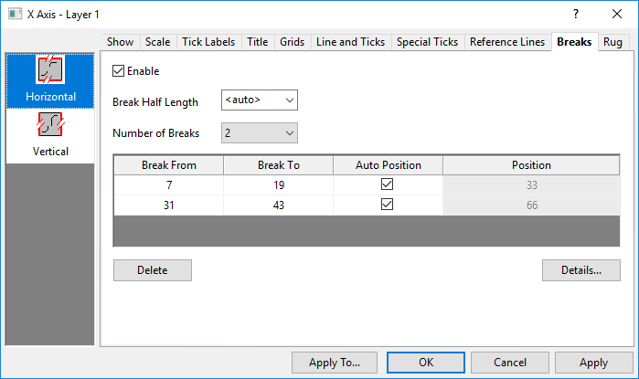
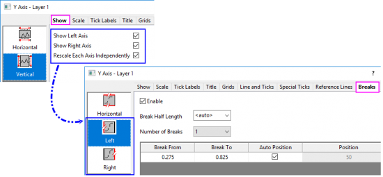
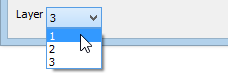
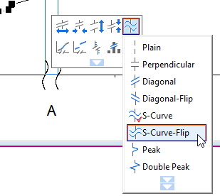
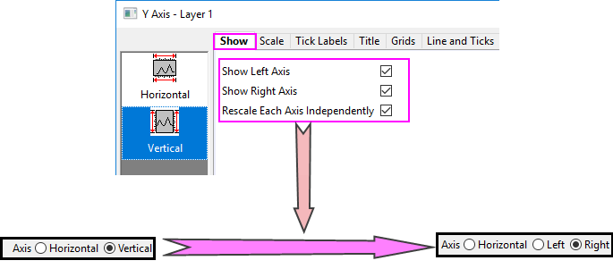

Die Registerkarte Unterbrechungen
AxesRef-Breaks
Diese Registerkarte wird verwendet, um Achsenunterbrechungen auf vertikalen oder horizontalen Achsen hinzuzufügen und benutzerdefiniert anzupassen.
- 
 |
Seit Origin 2023 gibt es, wenn Sie die rechte und die linke Y-Achse anzeigen und Jede Y-Achse unabhängig neu skalieren auf der Registerkarte Zeigen aktivieren, zwei getrennte vertikale Symbole Links und Rechts, mit denen Sie die Achsenunterbrechungen für die linke und die rechte Y-Achse separat benutzerdefiniert anpassen können.

|
Layerauswahl
Bevor Sie die Elemente der Achsenunterbrechungen benutzerdefiniert anpassen, können Sie die Layerliste verwenden, um zwischen Layern in einem Diagramm mit mehreren Layern zu wechseln.

Unterbrechungen
Hinweis: Achsenunterbrechungen können nicht verwendet werden, wenn die Tabelle der Hilfsstrichbeschriftung aktiviert ist.
| Aktivieren |
Aktivieren Sie dieses Kontrollkästchen, um Achsenunterbrechungen anzuzeigen.
|
| Unterbrechung halbe Länge |
Mit dieser Option legen Sie die Unterbrechung der Achse auf halber Länge fest.
<Auto> setzt die Achsenunterbrechung bei halber Länge gleich dem Abstand zwischen den großen Hilfsstrichen.
|
| Anzahl der Unterbrechungen |
Legen Sie die Anzahl der speziellen Hilfsstriche, die auf der Achse gezeigt werden, zwischen 1 und 7 fest. Durch Wählen einer Anzahl von Unterbrechungen wird eine entsprechende Anzahl von Seiten für Unterbrechung# im Abschnitt Unterbrechungen erstellt.
|
|
Wenn Achsenunterbrechungen zur Diagrammachse hinzugefügt wurden, können Sie ihr Aussehen anpassen, in dem Sie auf die Achsenunterbrechung klicken und die Schaltflächen der Minisymbolleiste verwenden, um die Länge des Unterbrechungssymbols, den Symbolabstand, die Symbolform etc. zu ändern.
-
- 
|
Anzeigefeld für Unterbrechungen
Die aktuelle Einstellung der Unterbrechungen wird in diesem Anzeigefeld angezeigt. Es gibt vier Spalten in diesem Anzeigefeld, und jede wird für unterschiedliche Zwecke verwendet.
Unterbrechung von
Legen Sie den Anfangswert der Skalierung für den Bereich in der Achsenunterbrechung fest.
Unterbrechung bis
Legen Sie den Endwert der Skalierung für den Bereich in der Achsenunterbrechung fest.
Automatische Position
Legen Sie fest, ob die Position der Unterbrechung auf der Achse automatisch bestimmt werden soll. Wenn Sie die Unterbrechungsposition benutzerdefiniert anpassen wollen, deaktivieren Sie dieses Kontrollkästchen und legen Sie dann einen Wert in der Spalte Position fest.
Origin unterstützt zwei Methoden, um die Unterbrechung automatisch zu positionieren:
- In Origin 2017 und anderen älteren Versionen teilt Origin die Achsenlänge, unabhängig davon, was Sie in den Zellen Unterbrechung von und Unterbrechung bis eingegeben haben (diese Werte sind die tatsächlichen Achsenbereiche der Unterbrechung), sobald Sie das Kontrollkästchen Autom. Position aktiviert haben, und fügt die Unterbrechungen bei den Teilungspunkten ein.
Wenn Sie z. B. 3 Unterbrechungen in die Achse einfügen möchten und Autom. Position aktiviert haben, teilt Origin die Achse zuerst in vier gleiche Teile und positioniert die Unterbrechungen dann bei 25 %, 50 % und 75 % der Achsenlänge.
- Ab Origin 2018 unterstützt Origin neben diesem Verhalten auch die Verwendung einer proportionalen Einheit für die automatische Position einer Unterbrechung.
Wenn Sie die Werte Unterbrechung von und Unterbrechung bis eingeben, subtrahiert Origin die Unterbrechungslänge und die nicht-automatischen Achsensegmente von der gesamten Achsenlänge und skaliert dann die restlichen Segmente (die von den Achsenunterbrechungen abgeschnitten wurden) nach Anteil neu.
Dieses Verhalten kann durch das Aktivieren der Option Proportionale Einheit für automatische Unterbrechungsposition verwenden auf Seitenebene der Registerkarte Anzeige im Dialog Details Zeichnung ausgelöst werden.
Position
Diese Zelle ist nur bearbeitbar, wenn das Kontrollkästchen Automatische Position deaktiviert ist.
Bestimmen Sie die Position der Unterbrechung auf der Achse. Dieser Wert wird in Einheiten von % der Achsenlänge angegeben. Geben Sie zum Beispiel 50 in dieses Textfeld ein, um die Achsenunterbrechung in der Mitte der Achse zu positionieren. Falls nötig, ändert Origin die Skalierung auf beiden Seiten der Unterbrechung, um die angegebene Position zu übernehmen.
Schaltflächen
Es gibt zwei Schaltflächen unter dem Anzeigefeld:
| Löschen |
Diese Schaltfläche ist verfügbar, wenn ein oder mehrere Unterbrechungseinträge in dem Anzeigefeld ausgewählt sind. Es löscht die ausgewählten Unterbrechungen. Beachten Sie, dass Sie, um mehrere Einträge auszuwählen, die Strg-Taste gedrückt halten und einzeln auf die Einträge der speziellen Hilfsstriche klicken können. |
| Details |
Diese Schaltfläche wird verwendet, um den Dialog Details der Unterbrechungen für die weitere benutzerdefinierte Anpassung der Unterbrechungen zu öffnen. |
Dialog Details der Unterbrechungen
Dieser Dialog kann durch Klicken auf die Schaltfläche Details... auf der Registerkarte Unterbrechungen im Dialog Achsen geöffnet werden.
|
Wenn dieser Dialog geöffnet ist, wird der Hauptdialog Achsen verborgen. Sie können auf die Schaltfläche Anwenden klicken, um die Änderung nur in diesem Dialog anzuwenden, ohne zum Hauptdialog Achsen zurückzukehren. Wenn Sie auf die Schaltfläche OK klicken, werden die Einstellungen gespeichert und dieser Dialog geschlossen. Klicken Sie auf die Schaltfläche Abbrechen, um diesen Dialog zu schließen und wieder den Hauptdialog anzuzeigen.
|
Dieser Dialog hat zwei Registerkarten, die verwendet werden können, um die Einstellungen für die Unterbrechungen vorzunehmen.
Achsenauswahl
Sie können eine Achse in der oberen rechten Ecke wählen, um Unterbrechungen auf verschiedenen Achsen benutzerdefiniert anzupassen.
Wenn Sie Linke Achse und Rechte Achse gewählt haben und das Kontrollkästchen Jede Achse unabhängig neu skalieren auf der Registerkarte Zeigen aktiviert ist, wird die vertikale Achse in zwei Optionen, Rechts und Links aufgeteilt, damit Sie die Unterbrechungen auf den zwei Y-Achsen unabhängig voneinander benutzerdefiniert anpassen können.

Registerkarte Skalierung nach Unterbrechung
Diese Registerkarte wird verwendet, um die Skalierung nach der Unterbrechung benutzerdefiniert anzupassen.
| Unterbrechung von |
Legen Sie den Anfangswert der Skalierung für den Bereich in der Achsenunterbrechung fest. |
| Unterbrechung bis |
Legen Sie den Endwert der Skalierung für den Bereich in der Achsenunterbrechung fest. |
| Position (% der Achsenlänge) |
Das Bedienelement ist gleich den Zellen Autom. Position und Position auf der Registerkarte Unterbrechungen.
Dieses Feld nur bearbeitbar, wenn das folgende Kontrollkästchen <Auto> deaktiviert ist.
Bestimmen Sie die Position der Unterbrechung auf der Achse. Dieser Wert wird in Einheiten von % der Achsenlänge angegeben. Geben Sie zum Beispiel 50 in dieses Textfeld ein, um die Achsenunterbrechung in der Mitte der Achse zu positionieren. Falls nötig, ändert Origin die Skalierung auf beiden Seiten der Unterbrechung, um die angegebene Position zu übernehmen.
|
| Automatische Skalierung |
Wenn das Kontrollkästchen Autom. Skalierung aktiviert ist, folgt die Skalierung nach der Unterbrechung den Einstellungen auf der Seite Skalierung. Dieses Kontrollkästchen ist standardmäßig aktiviert. |
| Skalierungstyp |
Legen Sie den Skalierungstyp nach der Unterbrechung fest (entsprechend der Tabelle für Typ auf dieser Seite). Nur verfügbar, wenn das Kontrollkästchen Auto deaktiviert ist (siehe oben).
|
| Große Hilfsstriche |
Legen Sie den Typ, den Wert und den ersten Hilfsstrich der großen Hilfsstriche fest (entsprechend dem Abschnitt für die Großen Hilfsstriche auf dieser Seite). Nur verfügbar, wenn das Kontrollkästchen Auto deaktiviert ist (siehe oben).
|
| Kleine Hilfsstriche |
Legen Sie den Typ der kleinen Hilfsstriche fest (entsprechend dem Abschnitt für Kleine Hilfsstriche auf dieser Seite). Nur verfügbar, wenn das Kontrollkästchen Auto deaktiviert ist (siehe oben).
|
Registerkarte Hilfsstrichsbeschriftung nach Unterbrechung
Diese Registerkarte wird verwendet, um die (unteren/oberen/linken/rechten) Beschriftungen der Achsenhilfsstriche nach der Unterbrechung benutzerdefiniert anzupassen. Sie können die Achse wechseln, um die Hilfsstrichsbeschriftungen auf verschiedenen Achsen benutzerdefiniert anzupassen.
| Auto |
Wenn das Kontrollkästchen Auto aktiviert ist, entsprechen die Hilfsstrichsbeschriftungen nach der Unterbrechung den Einstellungen auf der Seite Beschriftung der Hilfsstriche. Dieses Kontrollkästchen ist standardmäßig aktiviert. |
| Typ |
Legen Sie den Typ der Hilfsstrichsbeschriftung nach der Unterbrechung fest (entsprechend der Tabelle für Typ auf dieser Seite). Diese Auswahlliste ist nur verfügbar, wenn das Kontrollkästchen Auto deaktiviert ist (siehe oben).
|
Anzeige/
Datensatzname |
Bestimmen Sie, wie die Beschriftung der Hilfsstriche angezeigt wird. Die Optionen der Auswahlliste unterscheiden sich in Abhängigkeit von der Auswahl in der Auswahlliste Typ. Nur verfügbar, wenn das Kontrollkästchen Auto deaktiviert ist (siehe oben).
(Beschreibungen der Optionen finden Sie unter Anzeige / Datensatzname auf dieser Seite).
|
| Beschriftung der kleinen Hilfsstriche |
Nur verfügbar, wenn das Kontrollkästchen Auto deaktiviert ist (siehe oben).
- Die Beschriftungen der kleinen Hilfsstriche werden standardmäßig verborgen.
- Bei jedem kleinen Hilfsstrich zeigen
- Wählen Sie diese Option, um Beschriftungen bei den kleinen Hilfsstrichen zu zeigen.
- Nur bei festgelegten Indizes zeigen
- Die Beschriftung wird nur für festgelegte kleine Hilfsstriche angezeigt. Wenn Sie diese Option gewählt haben, wird das Textfeld Hilfsstrichsindizes angezeigt. Geben Sie in dieses Textfeld die durch Leerzeichen getrennten Zahlen ein, die den Index der kleinen Hilfsstriche darstellen (z.B. bedeutet "1 4", dass der 1. und 4. kleine Hilfsstrich zwischen den Beschriftungen der jeweils nebeneinander liegenden großen Hilfsstriche beschriftet wird).
|